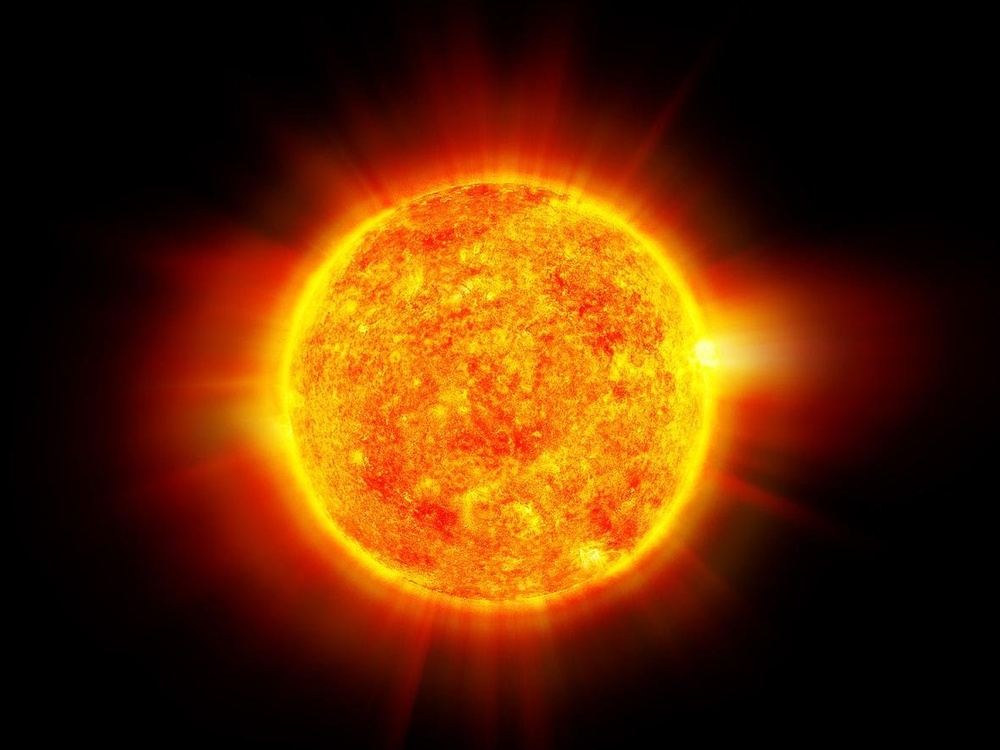
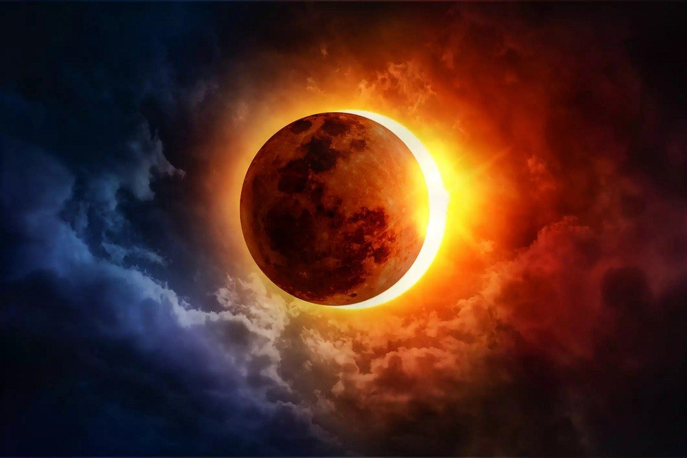
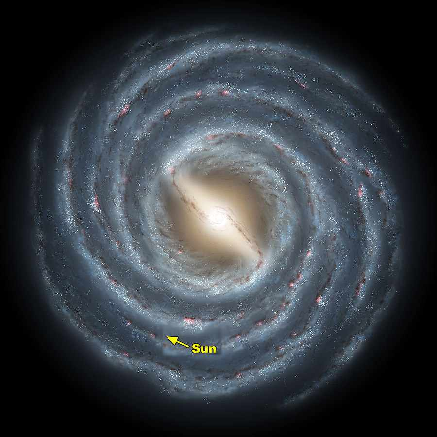
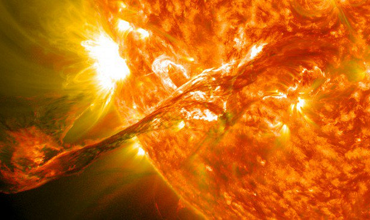
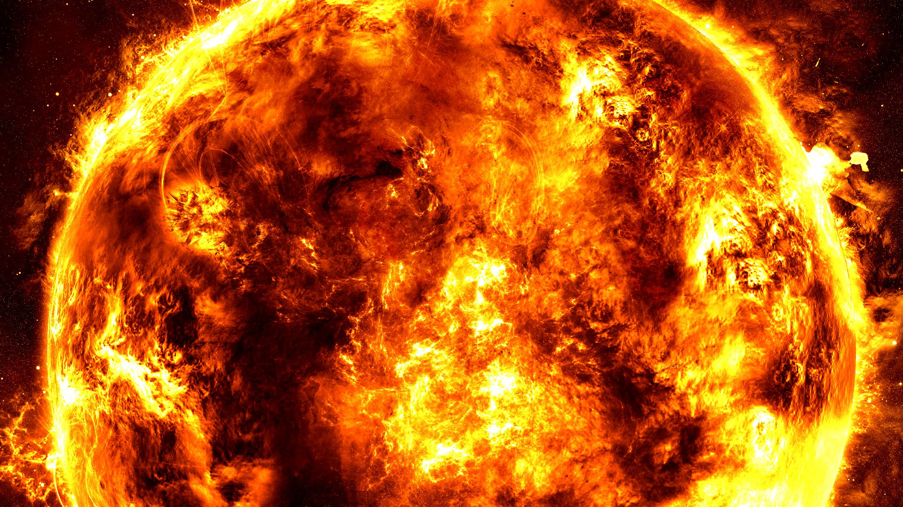

Солнце как одна из звезд
×
У солнца есть характеристики, которые мы встречаем и в других звездах галактики. Например, солнце по своим размерам и цвету излучения является желтым карликом, как некоторые другие звезды, четвертой по яркости звездой из пятидесяти звездных систем, замеченных астрономами. Это звезда – одиночка, которая излучает волны разных длин (инфракрасные лучи, гамма-лучи, рентгеновские лучи, радио лучи), но больше всего волны видимые, желто-зеленого цвета. Солнце ощутимо влияет комплексом этих излучений (солнечным ветром) на Землю, но земля не беззащитна, ее оберегает от вредного воздействия солнечных лучей атмосфера и магнитосфера.По составу солнце – шар из плазмы, то есть из комплекса заряженных частиц, которые взаимодействуют друг с другом, это ядра атомов гелия, водорода и также электроны. Результат этого взаимодействия – наличие магнитного поля у звезды, которое и удерживает вокруг себя солнечные спутники - планеты.
Благодаря магнитным процессам на поверхности солнца мы наблюдаем эдакие солнечные пятна. Интересно, что они возникают не по одному, а парами в местах выхода и входа искаженного магнитного поля, в виде водоворотов раскаленного газа. Искажение магнитного поля солнца бывает разной силы в разные года. Оно меняется в течении 11, 2 лет, этот период назван солнечным годом. В зависимости от активности солнца солнечные пятна на нем появляются и исчезают.
.jpg) О структуре солнца
О структуре солнца
×
У солнца также есть атмосфера, названная солнечной короной, но она в отличии от земной не состоит из кислорода и углекислого газа, но это само излучение солнца, горячее во много раз, чем тело солнца, поэтому во время затмений корону хорошо видно, Она рассеивается по мере удаления от звезды видимо на 5 радиусов солнца, и дальше на более 10 радиусов нашего светила. Солнечные спутники, как и Земля находятся внутри этой короны, но на дальней ее границе. Подобное строение имеют большинство классических звезд.
Из солнечной короны вырывается солнечный ветер, который несет с собой частицы массы тела солнца. За 150 лет солнце теряет массу (ионизированные частицы – протоны, электроны, α-частицы) равную массе Земли. Солнечный ветер активно воздействует на атмосферу Земли, например, он создает полярные сияния и геомагнитные бури.

Солнечные затмения
×
Солнечное затмение – это, когда луна находится между солнцем и землей. Солнце не висит в пространстве без движения, оно вращается вокруг самого себя с определенной скоростью, также и луна не стоит на месте, но вращается вокруг солнца. И бывают периодично сегменты времени, когда ночное светило оказывается четко между землей и солнцем и заслоняет частично или полностью от нашего взгляда свет, тогда можно увидеть корону солнца. В среднем солнечные затмения можно увидеть 2 раза в году с разных точек земного шара. Во время этого явления по Земле перемещается круглая лунная тень, которая может накрыть крупный город. С одного и того же места солнечное затмение, можно увидеть невооруженным глазом только раз в 200-300 лет.
Информация о солнечных вспышках и корональных выбросах.

Месторасположение солнца в галактике
×
Если выразится кратко, наша звезда расположена в Млечном пути – спиральной галактике с перемычкой, от центра ее наше светило удалено на 26 000 световых лет. Солнце перемещается вокруг Млечного пути, и делает один оборот за 225—250 мил. лет. В данный момент наша звезда находится на крае рукава Ориона изнутри, между рукавом Стрельца и рукавом Персея, это место еще названо «местным межзвездным облаком» — это плотное скопление межзвездного газа с температурой почти равной температуре Солнца. Это облако в свою очередь находится в «местном пузыре» - это территория горячего межзвездного газа, разряженного по своей структуре больше, чем межзвездное облако.

О происхождении солнца
×
Есть два основных взгляда на происхождение солнца. Атеисты и эволюционисты верят, что Солнце – обычная звезда из многих звезд, которые возникли в сжавшейся газопылевой туманности. Но основательных доказательств такого происхождения и процесса формирования звезды мы не имеем и не можем иметь, это всего лишь предположения, основанные на вере, что разумного Создателя нет, и все произошло благодаря ряду случайностей. Второй же взгляд на происхождение Солнца основан на историческом документе, который сохранился неизменным много столетий – это Библия. Итак, ссылаясь на этот исторический документ, мы узнаем из 1 главы Бытия, что Солнце по Своему разумному замыслу сформировал и разместил в галактике Сам Создатель всего материального и нематериального.

Информация о солнце и его уникальном постоянстве.
×
Для того, чтобы на Земле существовала жизнь, ее звезда должна поддерживать положительное постоянное влияние на свой спутник. Солнце для этого подходит по всем параметрам.Солнце - это звезда, которая является одной из 10% самых больших звезд (если говорить о массе) среди ближайших к ней, и на протяжении своей жизни вместе с Землей она не теряет своего «веса». По факту, это самый идеальный вариант для существования жизни на нашей планете. Солнце неизменно меньше всех похожих звезд излучает ультрафиолет, это важный параметр постоянства. Также наша звезда - одиночка, а многие звезды объединены в краткие системы, в таких «содружествах звезд» звездный спутник страдает от крайних колебаний подогрева и охлаждения. Наше же Солнце достаточно равномерно и постоянно прогревает наш земной дом. Расположение Солнца в нашей галактике идеально. Оно вращается по довольно круглой орбите в Млечном Пути и параллельно ему, что сохраняет светило в «покое» от других звезд, а это значит, что наша звезда не пройдет слишком близко к центру галактики, для которого норма - возникновение сверхновых звезд, что крайне разрушительно. Если говорить о вспышках на солнце, то они довольно стабильны и невелики по сравнению со сверх вспышками на звездах такого же типа, как Солнце. Эти вспышки сильнее самых сильных солнечных вспышек в 100-100 миллионов раз, они разрушили бы озоновый слой Земли в одно мгновение.